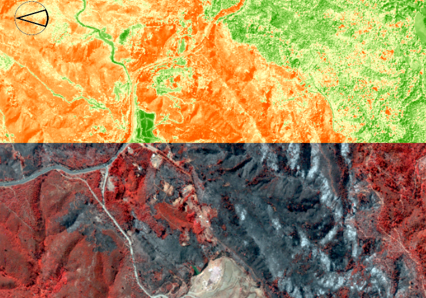

¿Porque es importante calibrar una imagen?
La calibración es un proceso que permite calibrar los niveles digitales (ND) de una imagen a un primer parámetro físico (radianza espectral) y luego a reflectancia además de mejorar la interpretabilidad y calidad de la información. La calibración y corrección son procesos particularmente importantes al momento de trabajar con percepción remota y sobre todo si queremos realizar comparaciones de múltiples datos en el tiempo.

Ilustración: Comparación imagen Landsat 8 en ND y Reflectancia. LABGRS, 2020.
Es importante destacar que el valor registrado para un pixel por parte del sensor, no solo incluye la energía reflejada o emitida desde la superficie terrestre. También se capda la energía dispersada y emitida por la atmósfera; en la mayoría de los casos el interés está en los valores superficiales y es por eso la clibración y corrección deben aplicarse.
Obra publicada con Licencia Creative Commons Reconocimiento Compartir igual 4.0